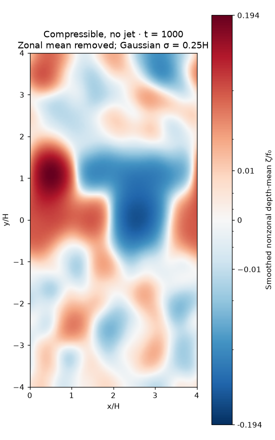

Update: all four runs have completed t = 1000. Watch the full compressible and anelastic comparisons and analysis.
← Jupiter Flow GalleryThis case completed t = 1000, continuing its own t = 100 checkpoint with unchanged physics and guards. Time is nondimensional. This page contains the compressible no-jet case only; it does not imply that the three other continuations have finished.
Download MP4 · All four cases through t = 100
Vorticity above, tracer below; three depths across. Movie sampling every 5 simulation units: 201 frames at 8 fps, no temporal interpolation. All 1001 integer-time states enter the analysis and fixed vorticity limits. Late tracer contrast is faint on this unchanged absolute-concentration scale as mixing reduces spatial variation.
The final field contains a prominent concentrated cyclone alongside a broader anticyclonic region, visible across depths and in the smoothed depth mean. Smaller convective structures persist around them. A dominant anticyclonic depth-averaged state is not established. Over t = 900–1000, negative-vorticity enstrophy accounts for 45.8% of the defined smoothed, nonzonal depth-mean diagnostic. The upper sampled layer has a somewhat larger negative share (55.9% in the nonzonal, unsmoothed layer diagnostic), while the lower two layers are near 48%. These are spatial statistics, not proof of a single coherent vortex or of inverse energy transfer.
The initial condition already contained large mixed-sign eddies. Nonzonal depth-mean kinetic energy is approximately 0.00575 at t = 1000, versus 0.00924 initially. Survival or rearrangement of seeded vortices must not be called spontaneous LSV formation from these diagnostics alone.

Common reference-density-weighted depth mean; zonal mean removed; Gaussian smoothing σ = 0.25H with reflected y and periodic x boundaries. Sign statistics exclude |y| ≥ 3.5H. Full-extrema color range.
Maximum Mach is 0.421; mass-weighted RMS Mach is 0.059. No saved cells at the endpoint exceed Mach 0.5. Mass conservation passed and no stopping guard fired.
The maximum relative departure of the horizontal-mean temperature profile from its initial profile is 23.5%. The minimum horizontally averaged cap N² remains positive at 1.73, but has fallen from about 36.3 at t = 100. Thus the thermal background and cap confinement have evolved appreciably.
The measured compressible energy-budget residual is −24.0% of cumulative bottom heat input. This remains unresolved and limits quantitative energetic interpretation; completion alone is not validation of the physical model.
This no-jet case has neither an imposed jet nor jet momentum relaxation. In the companion jet cases, the target jet is zero below z/H = 0.82, rises smoothly from 0.82 to 0.96, and reaches full amplitude above 0.96. However, the mean-flow acceleration (U_target − ⟨u⟩_x)/200 is applied at every height. Below the cap this relaxes the zonal mean toward zero; it is not direct damping of every eddy velocity.
Consequently, jet versus no jet also changes relaxation of the deep zonal mean. Differences cannot be assigned to cap shear alone. No change to this implementation was made for the continuation.
128 × 256 × 80; domain 4H × 8H × H; Ω = 3 at 67.5°N; β = 0.0032116888521660312; periodic x, bounded y/z. Bottom heat flux 0.03125, existing cap, conduction and horizontal-mean thermal restoration; WENO9, no turbulence closure. Same original eddies (RMS 0.136); no reset or rotation change at restart.
Vorticity ζ/f₀: positive cyclonic, negative anticyclonic. Fixed per-depth full-extrema limits, asinh width 0.01. Tracer asinh((C−0.1)/0.005), fixed range 0–1 with absolute-concentration ticks. Panels stretched for readability.
Summary and diagnostics · Time-resolved metrics · Media verification and scales · Simulation source
Unity simulation 2187099_0; render 2191735. All scientific computation, analysis and rendering on Unity.